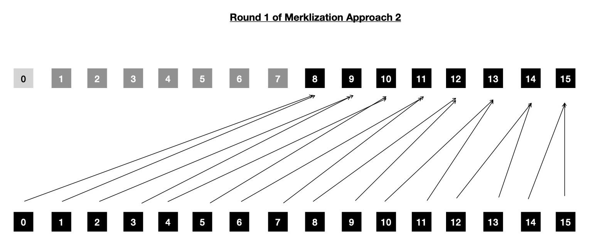

Around a fortnight back I wrote about OpenCL accelerated Merkle Tree construction technique, while using
Rescue Prime Hash as underlying collision resistant, cryptographic hash function for obtaining immediate parent node from two children
nodes ( either leaves/ intermediates ). You can find that post here.
During last two weeks, I've made some improvements in Rescue Prime Hash implementation and also ported it to SYCL. If you happen to
be specifically interested in those changes/ improvements, I suggest you take a look at following pull requests.
- Porting vectorized OpenCL Rescue Prime to SYCL
- Optimizing SYCL Rescue Prime with reduced vector lanes
Along with that I also explored a different way of Merklization, where given problem statement is same as before i.e.
when N -many leaf nodes of some Binary Merkle Tree are provided with (N - 1) -many intermediate nodes to be computed.
In this new way of Merklization, I change which work-items are tasked to compute which intermediate nodes and how many
kernel dispatch rounds are required for computing all intermediate nodes. But, as usual, that itself comes with its benefits and drawbacks.
Today in this post, I plan to study design and performance of two Merklization techniques, that I've devised, while
using SYCL for implementation.
Same as last post, I'm not going to be explaining how I improved Rescue Prime implementation in SYCL, but I note that
a huge portion of Merklization performance boost comes from optimized implementation of Rescue Prime in SYCL.
I'll do a deep study of that in coming weeks, as promised before.
Let me begin with simple one, which henceforth I'll call merklization approach 1. Here merklize function is provided with N -many leaf nodes, where N = 2i ∀ i ∈ {1, 2, ...}. (N - 1) -many intermediate nodes are computed by dispatching compute kernel log2N times. Say for example, if I start with N = 32, all intermediates are computed in 5 rounds, as shown below.
N = 32
leaves = [1; N] # 32 leaf nodes
intermediates = [0; N] # empty intermediate node allocation
## Dispatch 1:
intermediates[16..32] = merklize(leaves) # pairs total of 32 nodes into 16 intermediates
## Dispatch 2:
intermediates[8..16] = merklize(intermediates[16..32]) # pairs total of 16 nodes into 8 intermediates
## Dispatch 3:
intermediates[4..8] = merklize(intermediates[8..16]) # pairs total of 8 nodes into 4 intermediates
## Dispatch 4:
intermediates[2..4] = merklize(intermediates[4..8]) # pairs total of 4 nodes into 2 intermediates
## Dispatch 5:
intermediates[1..2] = merklize(intermediates[2..4]) # pairs 2 subtrees into root node
Total intermediate nodes computed = 16 + 8 + 4 + 2 + 1 = 31 ✅
You should also notice, there are 5 rounds and each of them are data dependent on previous dispatch round. But good news is that each of these rounds are easily parallelizable, due to absence of any intra-round data dependency. For some specific dispatch round if input to merklize has N intermediate/ leaf nodes, each pair of consecutive nodes are read by respective work-items ( N >> 1 in total ) which are merged into single Rescue Prime digest and stored in proper memory allocation. There is scope of global memory access coalescing, as non-strided, contiguous memory addresses are accessed by each work-item. Let us take help of a diagram to better appreciate the scope of parallelism.

In above diagram, N ( = 16 ) -many leaf nodes are used for depicting execution flow. It requires 4 kernel dispatch rounds to compute all intermediates and each of them are data dependent on previous round. Each dispatch round shows how many work-items are required to parallelly compute all computable intermediate nodes, by invoking Rescue merge function; which work-item accesses which pair of consequtive nodes ( either leaves/ intermediates; leaves applicable only during round 0 ). Note, very first memory location ( resevered for some Rescue Prime digest ) is never accessed by any of dispatched kernels, because (N - 1) -many intermediate nodes are stored in memory allocated for storing total of N -many intermediate nodes, where N is power of 2.
Implementing this in SYCL is pretty easy, using USM allocation allows me to perform pointer arithmetics, which is much more familiar compared to SYCL buffer/ sub-buffer/ accessor. I suggest you take a look here for exploring exact implementation details of approach 1.
Notice when N is relatively large, say = 224, total 24 kernel dispatch rounds will be required to compute all intermediate
nodes. Dispatching kernel requires host-device interaction, which is not cheap. Also OpenCL/ SYCL doesn't yet
allow recording commands into a buffer and then replaying same when required to be executed as I can do in Vulkan Compute; with that during actual kernel execution,
host-device interaction can be reduced and more work will be ready for offloading, while suffering less from host latencies due to say context switching.
Well, OpenCL has this extension
just to experiment with that idea, but today I'm working with SYCL. Motivated by this reason, I decided to devise a way
so that kernel dispatch round count can be reduced while Merklizing.
I'm going to refer to this new Merklization technique as approach 2. Say we've N = 224 -many leaf nodes and we're using work-group
size B = 28, then number of required kernel dispatch rounds for constructing Merkle Tree using approach 2 will be
log2(N >> (2 + log2B)) + 1, which turns out to be 15, much lesser than 24, which would be required using approach 1.
Also note, it doesn't matter what is work-group size, required #-of kernel dispatch rounds will always be log2N using approach 1.
But using approach 2, work-group size can influence total #-of required kernel dispatch rounds to compute whole Merkle Tree.
If I increase work-group size B to say 29, then following aforementioned formula, I'll be required to dispatch kernel 14 times.
But as per my experience, increasing work-group size to that large value benefits less, which we'll explore soon.
Say, finally I decide to live with work-group size B = 26, I'll be required to perform 17 rounds of kernel dispatch, which is still lesser than
24 rounds, required in approach 1.
I've come up with following formula for computing required #-of kernel dispatch rounds using approach 2.
You should notice, an appended + 1, in each of these cases, that's coming from here
--- the very first round of kernel dispatch reads all N -many leaves from input buffer and writes (N >> 1) -many intermediate nodes
( living just above leaf nodes ) in designated location of output buffer. After that remaining intermediate nodes are computed
in one/ many rounds. Note, each of these kernel dispatch rounds are data dependent on previous one, which is due to
inherent hierarchical structure of Merkle Tree.
# see https://github.com/itzmeanjan/ff-gpu/blob/8e480571b15d747ee5747f1853781317b4e5c9ae/merkle_tree.cpp#L137-L147
#
# `+ 1` at end of each case comes due to first kernel dispatch
# https://github.com/itzmeanjan/ff-gpu/blob/8e480571b15d747ee5747f1853781317b4e5c9ae/merkle_tree.cpp#L122-L135
N = leaf count
B = work-group size
R = number of kernel dispatch rounds
if N >> 2 == B:
R = 1 + 1
elif N >> 3 == B
R = (log2(N >> (2 + log2(B))) + 1) + 1
else:
R = log2(N >> (2 + log2(B))) + 1
Let me now explain approach 2, while attempting to foresee what kind of benefit it may bring to Merklization.
Say N = 16 and work-group size I'm willing to work with is 2. Then during first round, 8 work-items will be dispatched, each computing single Rescue Prime merge and total 8 intermediate nodes will be produced, who lives just above leaf nodes. Following above formula, I need to dispatch kernel 3 times for constructing whole Merkle Tree. First round looks like below.

During next round, which is dependent on first one, 4 work-items will be dispatched. As first step, each of these 4 work-items will be
computing one Rescue Prime merge, producing 4 intermediate nodes. These four work-items are globally numbered as {group: 0 => {0, 1, 2, 3}},
but remember I decided to work with work-group size of 2, so local indexing of 4 work-items will be {group: 0 => {0, 1}, group: 1 => {0, 1}}.
After first step in round 2, all work-items present in each of work-groups are synchronized, so that it's ensured that
next step can be proceeded into safely, without getting into trouble of data race. After all work-items ( = 2, in number ) in work-group
reach sycl::group_barrier(...), only even indexed work-items are chosen for computing next level of
intermediate nodes, which ensures odd indexed work-items are disabled and doesn't cause any data race. After all even indexed work-items
have computed upper level of intermediate nodes, all work-items in a work-group are synchronized again just to ensure that
this iteration step's data will be available ( i.e. visible to next set of active work-items ) for use in next iteration.
Now question is when to stop this iterative process ?
I use (1 << (iter - 1)) < B as iteration control condition, where iter = 1 at start and then iter++
after each iteration completes.
Going back to our example, where work-group size B = 2, iter = 1 should be only iteration, as after iter++
stopping criteria is reached ( 2 < 2 == !true ). Looking at following diagram also asserts so, only root of tree is left to
be computed, which will be done in last kernel dispatch round.
In third and last kernel dispatch round, only 1 work-item is launched for computing root of Merkle Tree and no more iterations
are required, because there is nothing else left for computation. Once again going back to approach 2, I'll demonstrate with N = 256 and B = 16
so that you can appreciate the need for work-group sychronization.
Formula says, 3 kernel dispatch rounds should be enough to compute all intermediate nodes of Binary Merkle Tree with 256 leaf nodes.
In first round, 128 work-items are dispatched for computing 128 intermediate nodes, living just above 256 leaf nodes.
In second kernel dispatch round, 64 work-items are dispatched for first computing 64 intermediate nodes from 128 intermediate nodes, computed
during last round of dispatch. Remember B = 16 is our work-group size, so 16 work-items per work-group are synchronized
before they decide to execute next step. As per loop control condition (1 << (iter - 1)) < B,
it's safe to execute loop with iter = 1. That means, 8 even indexed work-items among 16 work-items in each of 4 work-groups
will be activated to compute 8 intermediate nodes, producing total of 8 x 4 = 32 intermediate nodes from 64 intermediate nodes
which were computed during previous step by 4 work-groups. Let us expand into 8 even indexed work-items to be activated
.
It means among following 16 work-items ( per work-group; making total of 64 -many dispatched ), who all participated in first step of second round,
only even indexed 8 work-items will participate in second step i.e. iteration with iter = 1.
# step one; round two
work-group: 0 | active local work-item indices = {0, 1, 2, 3, 4, 5, 6, 7, 8, 9, 10, 11, 12, 13, 14, 15}
work-group: 1 | active local work-item indices = {0, 1, 2, 3, 4, 5, 6, 7, 8, 9, 10, 11, 12, 13, 14, 15}
work-group: 2 | active local work-item indices = {0, 1, 2, 3, 4, 5, 6, 7, 8, 9, 10, 11, 12, 13, 14, 15}
work-group: 3 | active local work-item indices = {0, 1, 2, 3, 4, 5, 6, 7, 8, 9, 10, 11, 12, 13, 14, 15}
Following 32 work-items will be active, computing 32 intermediate nodes from 64 intermediate nodes, computed during first step of second dispatch round. This is exactly the reason behind work-group synchronization after first step ( in second kernel dispatch round ), so it's ensured that all 16 work-items in work-group have computed the intermediate node it was responsible for. And only after that 8 selected work-items ( in a work-group ) can safely use previously computed 16 intermediate nodes.
# iter 1; step two; round two
work-group: 0 | active local work-item indices = {0, _, 2, _, 4, _, 6, _, 8, _, 10, _, 12, _, 14, _}
work-group: 1 | active local work-item indices = {0, _, 2, _, 4, _, 6, _, 8, _, 10, _, 12, _, 14, _}
work-group: 2 | active local work-item indices = {0, _, 2, _, 4, _, 6, _, 8, _, 10, _, 12, _, 14, _}
work-group: 3 | active local work-item indices = {0, _, 2, _, 4, _, 6, _, 8, _, 10, _, 12, _, 14, _}
After iteration with iter = 1, all 16 work-items in work-group to be synchronized, so that necessary intermediate nodes are visible to all work-items, who will be activated during next iteration i.e. iter = 2. Before we can go and execute iteration with iter = 2, we must check loop termination condition. As assert 2 < 16, execution can proceed. This time, 4 even indexed work-items ( per work-group ) among last iteration's 8 active work-items, will be activated for computing total of 4 x 4 = 16 intermediate nodes, as shown below. Once they reach end of loop, 16 work-items ( per work-group ) are synchronized, so that path of entering next round is paved well, by ensuring memory visibility.
# iter 2; step two; round two
work-group: 0 | active local work-item indices = {0, _, _, _, 4, _, _, _, 8, _, _, _, 12, _, _, _}
work-group: 1 | active local work-item indices = {0, _, _, _, 4, _, _, _, 8, _, _, _, 12, _, _, _}
work-group: 2 | active local work-item indices = {0, _, _, _, 4, _, _, _, 8, _, _, _, 12, _, _, _}
work-group: 3 | active local work-item indices = {0, _, _, _, 4, _, _, _, 8, _, _, _, 12, _, _, _}
Iteration iter = 3 can be executed, as loop termination condition doesn't yet satisfy ( i.e. assert 4 < 16 ). In this iteration, 2 even indexed work-items among last iteration's 4 active work-items ( per work-group ) will be activated for computing total 2 x 4 = 8 intermediate nodes, shown below. After completion of this iteration, all work-items in work-group will be synchronized, as usual.
# iter 3; step two; round two
work-group: 0 | active local work-item indices = {0, _, _, _, _, _, _, _, 8, _, _, _, _, _, _, _}
work-group: 1 | active local work-item indices = {0, _, _, _, _, _, _, _, 8, _, _, _, _, _, _, _}
work-group: 2 | active local work-item indices = {0, _, _, _, _, _, _, _, 8, _, _, _, _, _, _, _}
work-group: 3 | active local work-item indices = {0, _, _, _, _, _, _, _, 8, _, _, _, _, _, _, _}
Last iteration of second round i.e. iter = 4, will activate 1 ( and only one ) even-indexed work-item among 2 active work-items from last iteration ( per work-group ) and produce total of 4 intermediate nodes, which looks like below. Note this is last iteration because after that with iter = 5 loop termination condition ( i.e. (1 << (iter - 1)) < 16 ) is triggerred.
# iter 4; step two; round two
work-group: 0 | active local work-item indices = {0, _, _, _, _, _, _, _, _, _, _, _, _, _, _, _}
work-group: 1 | active local work-item indices = {0, _, _, _, _, _, _, _, _, _, _, _, _, _, _, _}
work-group: 2 | active local work-item indices = {0, _, _, _, _, _, _, _, _, _, _, _, _, _, _, _}
work-group: 3 | active local work-item indices = {0, _, _, _, _, _, _, _, _, _, _, _, _, _, _, _}
Actual reason behind stopping iteration is that I can't synchronize across work-groups, which will be required
in next iteration, if we've to proceed. If I decide to go with iter = 5, I need to compute 2 intermediate
nodes from (total) 4 intermediate nodes computed during last iteration. But those 4 input intermediate nodes are computed
by 4 different work-items who are part of 4 different work-groups ( see above depiction ).
Question is when to start executing iteration with iter = 5 ?
Answer is when all 64 work-items ( across 4 work-groups ) agree that they've completed previous iteration & data written to global memory during that is safely available for consumption.
As it's not possible to synchronize across work-groups, I can't safely start executing next iteration i.e. iter = 5.
There's a high chance that I'll end up reading intermediate node data when it's still in undefined state.
If I had a mechanism to synchronize across work-groups, following depicts which work-items will be active during iteration iter = 5.
# imagine `iter 5; step two; round two` is in execution
work-group: 0 | active local work-item indices = {0, _, _, _, _, _, _, _, _, _, _, _, _, _, _, _}
work-group: 1 | active local work-item indices = {_, _, _, _, _, _, _, _, _, _, _, _, _, _, _, _}
work-group: 2 | active local work-item indices = {0, _, _, _, _, _, _, _, _, _, _, _, _, _, _, _}
work-group: 3 | active local work-item indices = {_, _, _, _, _, _, _, _, _, _, _, _, _, _, _, _}
total 2 active work-items, living in different work-groups, requiring cross work-group synchronization ❌
As that is not possible, I'll have to dispatch another ( final ) round of kernel, for computing remaining intermediate nodes. Before I get to that I'd like to check how many intermediate nodes are already computed among 255 target intermediate nodes. Following table shows I've to still compute 3 intermediate nodes, which are root of Merkle Tree and their two immediate children.
round | step | iter | computed intermediates
--------------------------------------------
1 1 NA 128
2 1 NA 64
2 2 1 32
2 2 2 16
2 2 3 8
2 2 4 4
Total intermediate nodes computed till now = ( 128 + 64 + 32 + 16 + 8 + 4 ) = 252 üìù
In final kernel dispatch round, I'll dispatch 2 work-items ( in single work-group ), who will compute 2 intermediate nodes in step one from previous round's 4 computed intermediate nodes. After step one, these two work-items are synchronized so that in step two previous step's global memory changes ( i.e. write ops ) are ensured to be visible in correct state. In step two, first loop initiation/ termination condition is checked i.e. assert 1 < 2 and only even indexed work-item is activated to execute loop body, which computes root of Merkle Tree. With that all intermediate nodes are computed for Binary Merkle Tree with N = 256 leaf nodes.
# step one; round three
work-group: 0 | active local work-item indices = {0, 1}
# iter one; step two; round three
work-group: 0 | active local work-item indices = {0, _} # root of Merkle Tree computed
Few points to note here, if we increase work-group size for kernel dispatches in approach 2, it seems it's beneficial
because as per our formula lesser kernel dispatch rounds will be required. But approach 2 also requires us to perform
work-group level synchronization, that means when work-group size is doubled up, double -many work-items will be required to be
synchronizing so that safely next iteration can be executed, while consuming previous iteration's global memory
writes ( intermediate nodes computed during last iteration/ step ). And I also note synchronization is costly. Another point to note,
after every round of work-group synchronization half of previous round's active work-items ( in a work-group ) are deactivated that means
most of work-items are not doing any useful work, which is just waste of computation ability of highly parallel GPU architecture.
If you happen to be interested in inspecting approach 2 in detail, I suggest you take a look at
this
SYCL implementation.
Now it's time to benchmark both of these implementations to actually see what do they bring on table. I used Nvidia Tesla V100 for that purpose, while compiling single source SYCL program with SYCL/ DPC++ ( experimental CUDA backend ).
# see https://github.com/itzmeanjan/ff-gpu/blob/8e480571b15d747ee5747f1853781317b4e5c9ae/benchmarks/cuda_merkle_tree.md
Merklize using Rescue Prime on F(2**64 - 2**32 + 1) elements on `Tesla V100-SXM2-16GB`
leaves approach 1 approach 2
------------------------------------------------------------------
1048576 63.0723 ms 136.805 ms
2097152 116.168 ms 238.906 ms
4194304 221.621 ms 445.335 ms
8388608 431.217 ms 873.742 ms
As speculated, approach 1 is ~2x faster compared to approach 2. Though approach 2 has lesser kernel dispatch rounds but costly work-group level synchronization, mostly inactive work-items etc. are reasons behind lower performance. While in approach 1, there may be log2N -many dispatch rounds, but during each dispatch every work-item dispatched does some useful work, hence compute ability of GPU is better utilized.